Mobility Pulse
An application for activity-based modeling.
MobilityActivity-based modeling
Programmer / Research Associate · Al Ain, UAE
I’m a programmer and research associate at UAE University. My work spans mobility, mathematical modeling, autonomous multi-drone coordination, and decision-support systems.
Selected work
An application for activity-based modeling.
MobilityActivity-based modelingA system for urban air mobility and aerial logistics.
Urban air mobilityAerial logisticsTechnical background
Experience
2012 — PRESENT
UAE University · Al Ain, UAE
2010 — 2012
Al Rais Travels · Dubai, UAE
Education
Master of Computer ApplicationsAnna University, Chennai · 2006–2009Research background
Recognition
UAEU Chancellor’s Innovation Award
2019/2020RTA Dubai World Challenge for Self-Driving Transport
github.com/msherif4u